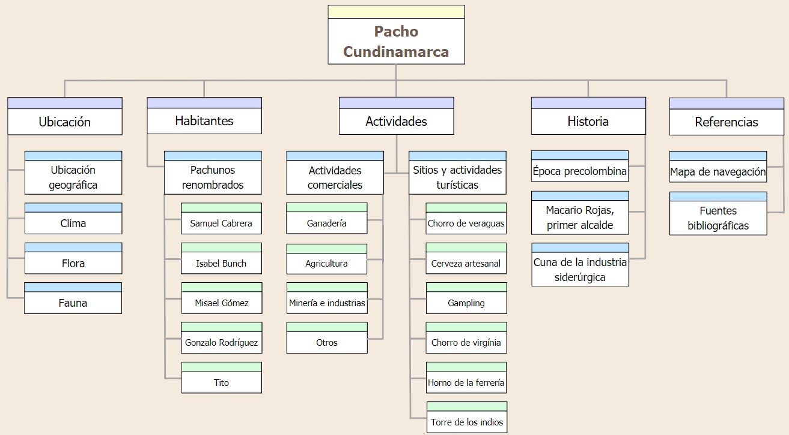

Referencias
Referencias Referencias
Mapa de navegación
  Fuentes bibliográficas e imágenes
Fuentes bibliográficas e imágenes
[1] Colaboradores de los proyectos Wikimedia. (2005, 30 de agosto). Pacho - Wikipedia, la enciclopedia libre.
[2] Colaboradores de los proyectos Wikimedia. (2019, 28 de febrero). Isabel Bunch de Cortes - Wikipedia, la enciclopedia libre.
[3] Colaboradores de los proyectos Wikimedia. (2009, 9 de abril). Samuel Cabrera - Wikipedia, la enciclopedia libre.
[4] Isabel Bunch de Cortes. (s.f.). ACADEMIA DE HISTORIA DE CUNDINAMARCA.
Recursos
[1] CSS Color Palette Generator: hermosas paletas de colores gratis. (s.f.). My Brand New Logo — Logo maker — Design your brand.
[2] Adobe Color - Color Wheel
[3] Flaticon. (s.f.).
[4] Canva
[Volver al inicio]